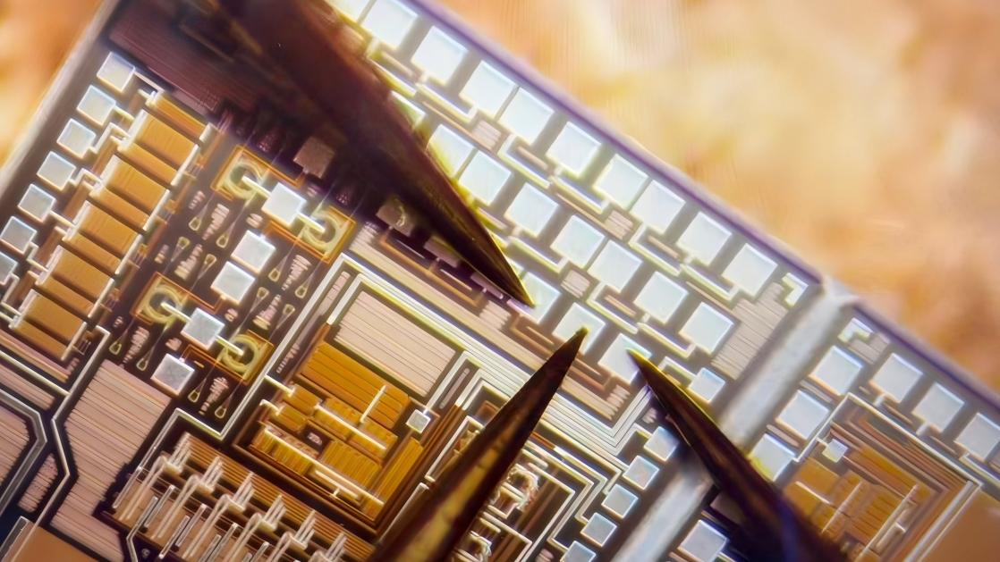
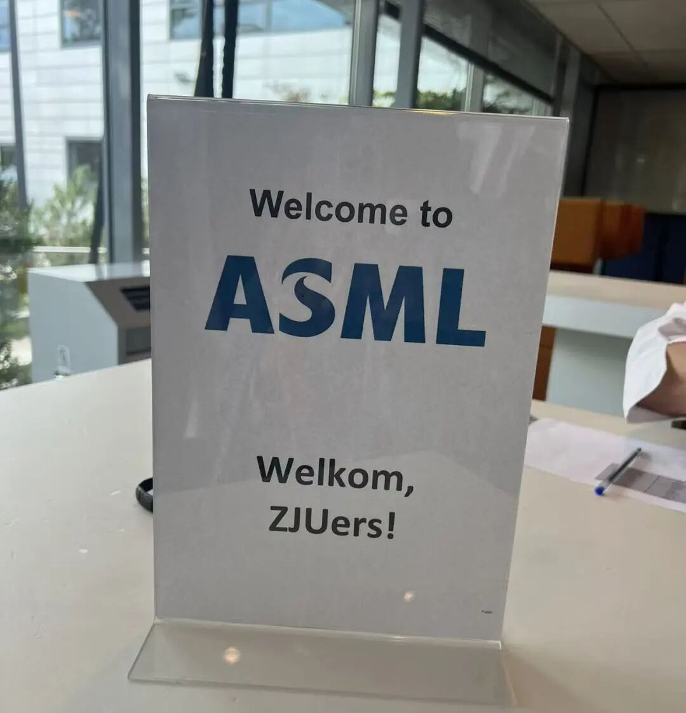
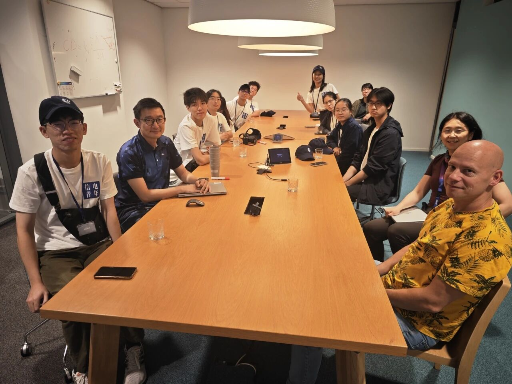
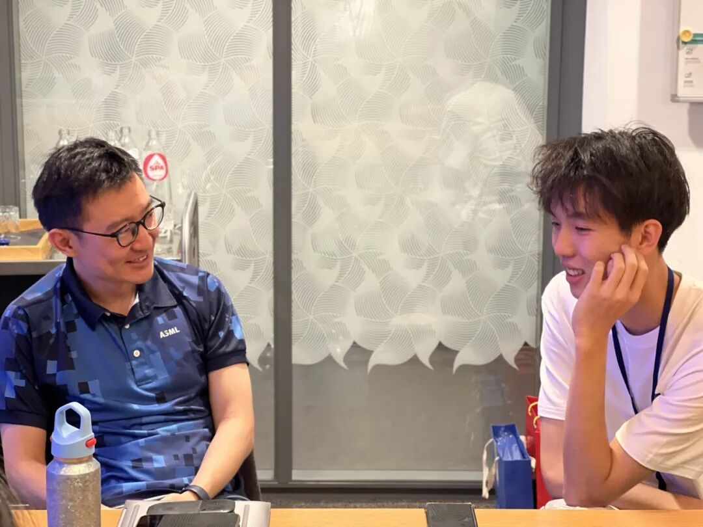
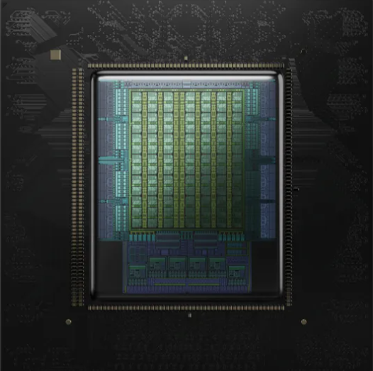

I like working across the layers of a system, from RTL and microarchitecture to the software that makes hardware useful. My current academic focus is split between silicon photonics, efficient AI hardware, and an agent-aware hardware prefetcher for AI agent workloads.
Outside the lab, leading a student visit to ASML helped me connect the semiconductor technologies I study with the people, process, and long-term thinking that move the industry forward.
Currently pursuing a B.Eng. · Expected graduation in June 2027
Working on NPU front-end design at the institute, with my role attached to the institute while contributing to its incubated company NanoCoreChip.
Developed an F2M data-conversion module for FP32, BF16, and FP16 inputs to MXINT4 and MXINT8 outputs, using Design Compiler feedback to optimize power, performance, and area.
Built a Tcl/Python-driven PrimeTime PX flow to evaluate switching activity and peak currents for clock-gating and power-delivery decisions.
Qiushi Wenxin Lab, Zhejiang University
Oct 2025 – Feb 2026
IP Verification Intern
Verified the XFLASHC Flash controller in a UVM environment, covering bus routing, dual-bank SWAP address remapping, and protection mechanisms.
Debugged AXI/AHB handshakes, register timing, and ECC/CRC handling with VCS and Verdi/Debussy.
Extended flash-operation and error-trapping regressions, identifying bus hangs and state-machine stalls.
📖
Publication
Selected publication
Device-Level Characterization of Back-Gate-Tunable Zero-Change MOSFETs for AI-Oriented Silicon Photonics
2026
CIOP 2026 · AcceptedIEEE publication review in progress
A research output from the SRTP optoelectronic integration project, prepared for CIOP 2026 in collaboration with IEEE. The official IEEE decision is expected in mid-November 2026.
AI hardware acceleration · Computer architecture Apr – Jun 2026
High-Performance GEMM Accelerator Based on Systolic Array
GEMM accelerator & TinyStories-1M deployment
An 8 × 8 output-stationary array with INT8/INT16 support, connected to a complete PC–UART–FPGA inference pipeline on a Nexys4DDR board; the system supports local AI deployment and acceleration, with the end-to-end inference flow running successfully on the hardware.
VerilogVivadoPythonMicroBlaze C
Explore the project +
Restructured pipeline registers and instantiated DSP IPs to address timing violations; combined BRAM banking with ping-pong buffering to overlap data movement and computation.
Introduced GEMV broadcast and input-vector reuse to reduce AXI DMA overhead during token decoding.
Developed quantization scripts and a C runtime for memory alignment, KV-cache scheduling, GELU, and LayerNorm.
Validated end-to-end TinyStories-1M inference with English story generation on the FPGA.
On-device TinyStories-1M result · video placeholder for final edit

LIGHT / INTEGRATION
SRTP · Project lead May 2025 – May 2026
Monolithic Optoelectronic Chip Based on 12-inch CMOS Silicon Photonics
Monolithic optoelectronics on a 12-inch CMOS platform
Led an SRTP project bringing electrical control circuits and optical devices onto the same top-silicon layer of a 55 nm, 220 nm SOI silicon-photonics platform.
2 tape-outs completed0.04 nm spectral resolution
Sentaurus TCADLTspicegdspyLabVIEW
Explore the project +
Developed side-gate MOSFET structures, automated substrate-bias testing, and BSIM4 parameter extraction using TCAD and Python.
Designed a control-circuit library including a 100 dBΩ transimpedance amplifier, an 8:1 analog multiplexer, and a 5-bit DAC.
Automated non-standard device layout generation with gdspy, reducing array iteration from hours to seconds.
Completed system-level micro-spectrometer verification, separating eight optical channels in the 1535–1565 nm band with a reported 0.04 nm resolution.
✈
International exchange & visiting
The Netherlands · ASML

ASML headquarters visit
The Netherlands · 2026
Project lead · Global ISEE exchange
I led the project from proposal and coordination through the visit itself, treating ASML as a chance to understand the frontier of semiconductor manufacturing from the inside.
The company’s position at the leading edge of lithography sharpened my curiosity about the field. Conversations with experienced engineers and alumni helped me think about technology bottlenecks, research culture, and the role students like me can play in the semiconductor industry.
Read the reflection +
This journey became an important push toward my current direction: learning how ambitious systems are built, how organizations evolve around them, and where my own circuit and architecture work can contribute.


🖊
Graduation project
Early proposal stage

Design and Implementation of an Agent-Aware Hardware Prefetcher for AI Agent Workloads
2026 — present
Graduation project · proposal defense in progress
Designing an agent-aware hardware prefetcher for AI agent workloads, with the aim of anticipating memory access patterns across tool execution, retrieval, data processing, and orchestration.
The project is informed by agentic CPU requirements around branch-heavy code, indirect memory access, and keeping cores fed through multistep workloads.
Advisor: Professor Peng Liu ↗ · computer architecture, microarchitecture, integrated circuit design, and hardware security
🎓
Education
Zhejiang University
Sep 2023 – Jun 2027 (expected)
B.Eng. in Microelectronics Science and Engineering
College of Information Science & Electronic Engineering
Elsewhere
Social & small momentsDouyin
Short videos and moments from everyday life.